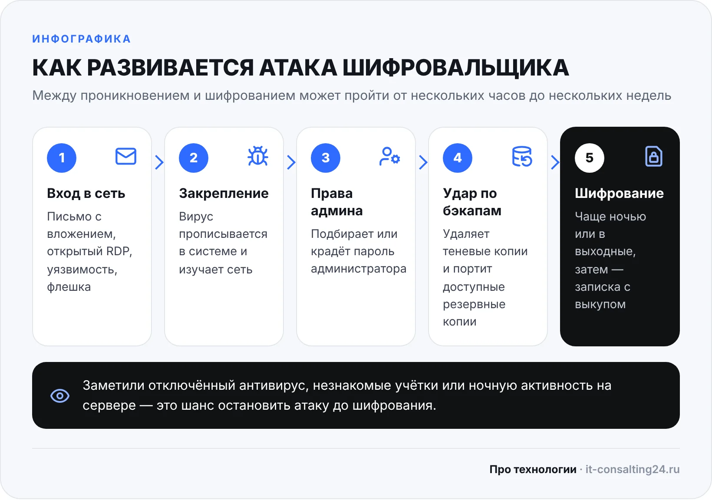
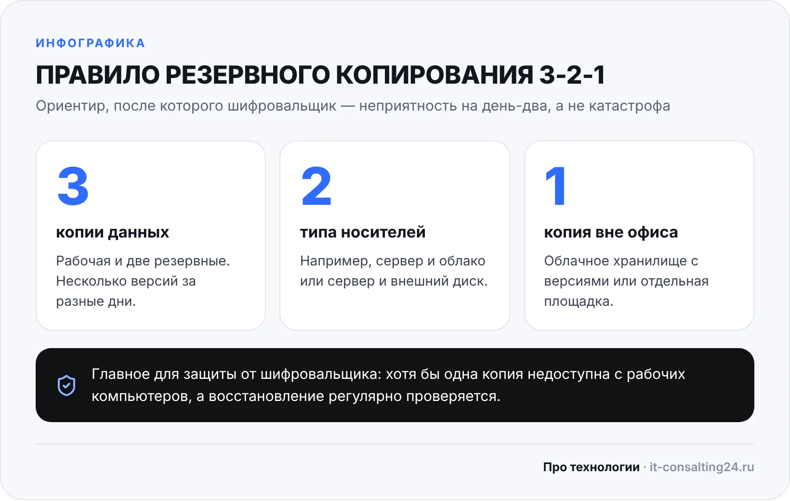

Шифровальщик — это вирус, который превращает документы, базы 1С и архивы в набор нечитаемых файлов, а за ключ расшифровки просит выкуп. Для небольшой компании такая атака означает остановку работы: нельзя выставить счёт, отгрузить товар, сдать отчётность. Хорошая новость в том, что защита от шифровальщиков не требует дорогих систем — большую часть риска закрывают правильные резервные копии, закрытый удалённый доступ и порядок с правами. Ниже разберём, как вирус попадает в офисную сеть, какие меры действительно работают, дадим чек-лист и план действий на случай, если файлы уже зашифрованы.
Что такое шифровальщик и почему он опасен для малого бизнеса
Обычный вирус ломает компьютер или ворует пароли. Шифровальщик действует иначе: он ничего не удаляет, а шифрует файлы стойким алгоритмом. Без ключа, который хранится у злоумышленников, вернуть данные обычно невозможно — ни антивирус, ни переустановка Windows здесь не помогут. После шифрования на рабочем столе появляется записка с требованием заплатить, чаще всего в криптовалюте.
Многие владельцы небольших фирм считают, что атакуют только крупные компании. На практике злоумышленники часто работают массово: рассылают письма тысячам адресов и автоматически ищут в интернете компьютеры с открытым удалённым доступом. Небольшой офис для них удобная цель — там реже есть отдельный специалист по безопасности, а резервные копии нередко лежат на том же сервере, что и сами данные.
Как шифровальщик попадает в сеть офиса
Чтобы выстроить защиту, полезно понимать основные пути заражения. Их немного, и почти все закрываются организационными мерами:
- Письма с вложениями и ссылками. «Акт сверки», «счёт на оплату», «требование налоговой» — сотрудник открывает файл, и запускается вредоносная программа. Особенно опасны архивы с паролем и документы, которые просят «включить содержимое» или макросы.
- Открытый удалённый рабочий стол (RDP). Если сервер или компьютер доступен из интернета по RDP, его пароль подбирают автоматически. Простой пароль администратора в такой ситуации — открытая дверь.
- Необновлённые программы и системы. Уязвимости в Windows, роутерах, VPN-шлюзах и популярных программах позволяют попасть внутрь без участия пользователя.
- Флешки и личные устройства. Ноутбук сотрудника, который дома пользуются дети, а утром подключают к офисной сети, — частый источник проблем.
Дальше атака обычно развивается по одной схеме: вирус закрепляется в системе, изучает сеть, пытается получить права администратора, удаляет или портит резервные копии и только потом запускает шифрование — часто ночью или в выходные, когда никто не смотрит на компьютеры. Между проникновением и шифрованием может пройти от нескольких часов до нескольких недель, поэтому ранние признаки важно замечать: внезапно отключённый антивирус, незнакомые учётные записи, необычная активность на сервере по ночам.

Резервные копии — главная защита от шифровальщиков
Если после атаки у вас есть свежая неповреждённая копия данных, шифровальщик превращается из катастрофы в неприятность на день-два. Поэтому начинать стоит именно с бэкапов, а не с покупки нового антивируса.
Ориентир — правило 3-2-1: три копии данных (рабочая и две резервные), на двух разных типах носителей, и одна из копий — вне офиса. Но для защиты от шифровальщиков важнее другое: хотя бы одна копия должна быть недоступна с заражённого компьютера. Если резервная папка видна в сети как обычный диск, вирус зашифрует её вместе со всем остальным.

Что это значит на практике:
- Копии делаются автоматически по расписанию, а не «когда вспомнили». Для 1С и бухгалтерии — ежедневно.
- Одна копия хранится отдельно: в облачном хранилище с версиями файлов, на отдельном сервере резервного копирования со своими учётными данными или на внешнем диске, который отключают после копирования.
- Учётная запись, которой пишутся бэкапы, не совпадает с учётными записями пользователей и администратора домена.
- Хранится несколько версий за разные дни. Шифрование могут заметить не сразу, и последняя копия к тому моменту уже будет испорчена.
- Восстановление регулярно проверяется. Копия, из которой никто ни разу не пробовал развернуть базу, — это надежда, а не защита.
Отдельно о теневых копиях Windows (VSS) и «Корзине»: они удобны, чтобы вернуть случайно удалённый файл, но шифровальщики первым делом стирают теневые копии. Полагаться на них как на единственный бэкап нельзя.
Закройте двери: удалённый доступ, обновления, права
Удалённый доступ — только через VPN. Сервер 1С или компьютер бухгалтера не должен быть доступен из интернета по RDP напрямую. Сотрудники из дома сначала подключаются к офисной сети через VPN, и только потом — к нужному компьютеру. Если без внешнего доступа никак, нужны сложные пароли, блокировка после нескольких неудачных попыток и, по возможности, двухфакторная аутентификация.
Обновления. Включите автоматическое обновление Windows на всех компьютерах и сервере, следите за прошивками роутера и VPN-шлюза, обновляйте браузеры, офисный пакет и программы для работы с документами. Компьютеры на системах, которые уже не получают обновлений безопасности, стоит заменить или хотя бы изолировать от основной сети.
Права пользователей. Обычный сотрудник не должен работать под учётной записью администратора. Тогда большая часть вредоносных программ просто не сможет установиться или отключить защиту. Пароль администратора у каждого компьютера должен быть свой, а не один на весь офис — иначе, захватив одну машину, вирус получает доступ ко всем.
Доступ к общим папкам. Каждый видит только то, что нужно для работы. Шифровальщик действует с правами того пользователя, на чьём компьютере он запустился.
Антивирус и встроенная защита Windows
Антивирус должен стоять на всех компьютерах и на сервере, обновляться автоматически и управляться централизованно, чтобы было видно, где защита отключена или базы устарели. Корпоративные версии умеют замечать подозрительное поведение программ, например массовое изменение файлов.
В Windows 10 и 11 есть встроенная функция против шифровальщиков — контролируемый доступ к папкам. Её включают в разделе «Безопасность Windows» → «Защита от вирусов и угроз» → «Защита от программ-шантажистов». После включения менять файлы в защищённых папках могут только доверенные программы. Учтите два момента: функция работает, только когда основной антивирус — сам Microsoft Defender, и после включения некоторые нужные программы придётся добавить в разрешённые вручную.
Сегментация сети и обучение сотрудников
Чем меньше компьютеров «видят» друг друга, тем меньше вирус успеет зашифровать. В небольшом офисе разумный минимум такой: отдельная гостевая сеть Wi-Fi для посетителей и личных телефонов, отдельный сегмент для камер видеонаблюдения и другого «умного» оборудования, а сервер и хранилище с резервными копиями доступны только тем, кому это действительно нужно.
Вторая половина защиты — люди. Не нужно проводить многочасовые курсы, достаточно договориться о нескольких простых правилах:
- не открывать вложения от неизвестных отправителей и неожиданные «документы» от знакомых — лучше перезвонить и уточнить;
- не включать макросы и «редактирование» в присланных документах без необходимости;
- не устанавливать программы самостоятельно и не приносить софт из интернета;
- сразу сообщать ответственному за ИТ, если компьютер ведёт себя странно, файлы перестали открываться или появилось незнакомое окно.
Слабые места офиса: что проверить в первую очередь
| Слабое место | Чем опасно | Что сделать |
|---|---|---|
| Бэкап лежит на том же сервере или в сетевой папке | Шифровальщик зашифрует копию вместе с данными | Хранить одну копию отдельно: облако с версиями, отдельный сервер или отключаемый диск |
| RDP открыт в интернет | Пароль подбирают автоматически, злоумышленник заходит как администратор | Закрыть порт на роутере, доступ — только через VPN |
| Все работают под администратором | Вирус устанавливается и отключает антивирус без препятствий | Выдать сотрудникам обычные учётные записи, права администратора — только ИТ-специалисту |
| Один пароль администратора на всех ПК | Захват одного компьютера открывает доступ ко всей сети | Уникальные пароли администратора для каждого компьютера |
| Обновления отключены или «потом» | Через известные уязвимости заражают без участия пользователя | Включить автообновление Windows, обновлять роутер и программы |
| Антивирус есть «где-то» и не проверяется | На части компьютеров защита выключена или устарела, и об этом никто не знает | Единая консоль управления антивирусом, регулярная проверка состояния |
| Гости и камеры в одной сети с бухгалтерией | Заражённое устройство получает доступ к рабочим компьютерам и серверу | Отдельная гостевая сеть и отдельный сегмент для камер |
Чек-лист защиты от шифровальщиков для небольшого офиса
Пройдитесь по списку и отметьте, что у вас уже сделано. Каждый пункт без галочки — задача на ближайший месяц:
- ☐ Резервные копии 1С, документов и почты создаются автоматически каждый день.
- ☐ Минимум одна копия хранится там, куда нельзя попасть с рабочих компьютеров.
- ☐ Хранится несколько версий копий, а восстановление проверялось за последние три месяца.
- ☐ RDP и другие службы удалённого доступа закрыты из интернета, сотрудники подключаются через VPN.
- ☐ Windows, роутер и основные программы обновляются.
- ☐ Сотрудники работают без прав администратора.
- ☐ У каждого компьютера свой пароль локального администратора.
- ☐ Антивирус установлен на всех ПК и сервере, его состояние видно централизованно.
- ☐ Доступ к общим папкам выдан по принципу «только то, что нужно».
- ☐ Гостевой Wi-Fi и камеры отделены от рабочей сети.
- ☐ Сотрудники знают, кому сообщать о подозрительных письмах и странном поведении компьютера.
- ☐ Есть записанный план: кто и что делает, если файлы зашифрованы.
Что делать, если файлы уже зашифрованы
Первые минуты решают, сколько данных удастся спасти. Порядок действий:
- Отключите заражённый компьютер от сети — выньте сетевой кабель и выключите Wi-Fi. Без специалиста не выключайте и не перезагружайте его: в работающей системе могут остаться следы, полезные для расследования.
- Проверьте остальные компьютеры и сервер. Если шифрование идёт и там, отключите от сети и их, а при необходимости — весь офисный коммутатор.
- Сразу отключите от сети устройства с резервными копиями, если они ещё не затронуты.
- Сфотографируйте записку с требованием выкупа и запишите, как изменились имена файлов. По этим данным определяют тип шифровальщика.
- Позовите специалиста. Нужно найти, как вирус попал внутрь, и закрыть эту дыру, иначе после восстановления всё повторится.
- Проверьте, есть ли бесплатный расшифровщик. Для части известных шифровальщиков антивирусные компании публикуют утилиты, многие из них собраны на проекте No More Ransom.
- Восстанавливайтесь только на чистую систему и из копии, проверенной на отсутствие вируса. Пароли всех учётных записей после инцидента нужно сменить.
Стоит ли платить выкуп
Решение остаётся за владельцем бизнеса, но важно понимать риски. Оплата не гарантирует, что вам пришлют рабочий ключ: расшифровка может пройти частично или не пройти вовсе. Заплатившая компания попадает в список тех, кто платит, и её могут атаковать снова. Некоторые группировки перед шифрованием выкачивают данные и после оплаты продолжают шантажировать угрозой публикации. Поэтому самый надёжный «выкуп» — это деньги и время, вложенные в резервные копии заранее.
Типичные ошибки
- «У нас есть бэкап» — на том же сервере. Самая частая ситуация: копии делались годами, но лежали рядом с данными и были зашифрованы вместе с ними.
- Копии никто не проверял. В момент восстановления выясняется, что задание не выполнялось несколько месяцев или копия базы повреждена.
- RDP «временно» открыли для подрядчика и забыли закрыть.
- Переустановили Windows и вернулись к работе, не выяснив, как вирус попал в сеть. Через неделю атака повторяется.
Когда стоит позвать специалиста
Часть пунктов чек-листа можно сделать самостоятельно: включить обновления, договориться с сотрудниками, проверить антивирус. Но настройка VPN, разграничение прав, отдельное хранилище для резервных копий и регулярная проверка восстановления требуют времени и опыта. Если в компании нет своего системного администратора, эти задачи удобно передать на ИТ-аутсорсинг: мы берём на себя резервное копирование, обновления, антивирус и контроль доступа, а вы получаете один понятный договор. Абонентское обслуживание стоит от 15 000 ₽ в месяц, а перед стартом мы проводим бесплатный аудит инфраструктуры за 1 день — он как раз покажет, какие пункты из таблицы выше у вас открыты.
Если нужна разовая помощь — настроить резервное копирование сервера и 1С, закрыть удалённый доступ и поднять VPN и гостевую сеть или почистить компьютеры от вирусов, — разовый вызов в Оренбурге стоит от 1 500 ₽, диагностика бесплатна, выезжаем в день обращения, а срочные случаи — в течение 2–3 часов.
Частые вопросы
Можно ли расшифровать файлы без выкупа?
Иногда да: для некоторых старых или плохо написанных шифровальщиков существуют бесплатные расшифровщики. Но для большинства современных версий ключ есть только у злоумышленников, поэтому реальный способ вернуть данные — резервная копия.
Достаточно ли одного антивируса для защиты от шифровальщиков?
Нет. Антивирус снижает риск, но новые версии вирусов могут им не распознаваться. Защиту дают несколько слоёв вместе: резервные копии вне сети, закрытый удалённый доступ, обновления, ограниченные права пользователей и антивирус.
Спасёт ли облачное хранилище вроде синхронизируемой папки?
Только если у хранилища есть история версий и её глубины хватает. Простая синхронизация перенесёт в облако уже зашифрованные файлы. Проверьте, можно ли откатить папку на дату до заражения.
Как часто делать резервные копии?
Ориентируйтесь на то, сколько работы вы готовы потерять. Для 1С и бухгалтерии обычно нужна ежедневная копия, для активно меняющихся баз — несколько раз в день.
С чего начать защиту от шифровальщиков, если бюджет небольшой?
Настроить автоматические резервные копии с одной копией вне сети, закрыть RDP из интернета и убрать у сотрудников права администратора. Эти три шага закрывают основную часть риска и почти не требуют затрат на программы.